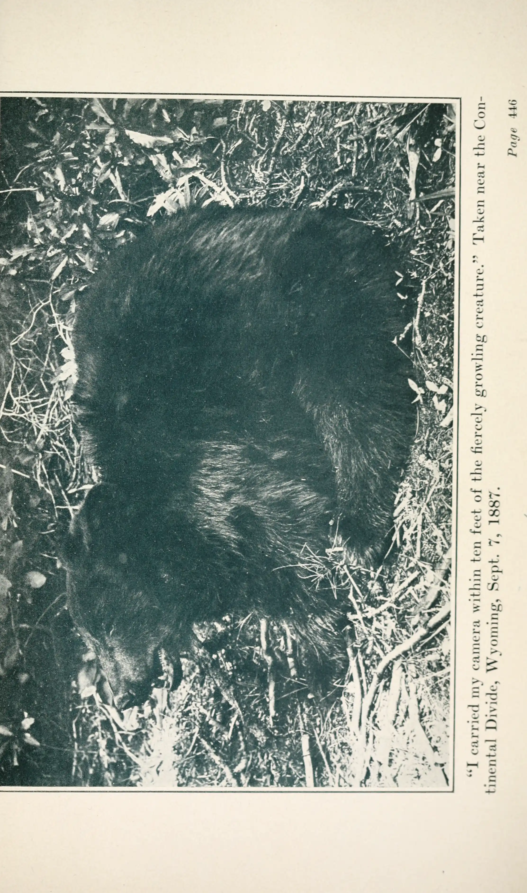

VOL.2026.06.05 · DAY 99
成长会自动消解很多难题
成长会改变你对「难题」的定义——许多困扰并非被正面攻克，而是随着视野升级自然消解。
敲黑板 · 本期重点
成长本身会改变问题定义——很多「难题」并非被解决，而是随着视野升级自然消解。
Cover Story · 视频日记
记录就是生命的延续
Recording is the continuation of life
把每日视频日记当作一期国际杂志来阅读——封面 Lead、栏目编号、双栏索引与 margin 引语，而非卡片墙。

| 一 | 二 | 三 | 四 | 五 | 六 | 日 |
|---|---|---|---|---|---|---|
| 1 | 2 | 3 | 4 | 5 | 6 | 7 |
| 8 | 9 | 10 | 11 | 12 | 13 | 14 |
| 15 | 16 | 17 | 18 | 19 | 20 | 21 |
| 22 | 23 | 24 | 25 | 26 | 27 | 28 |
| 29 | 30 | 1 | 2 | 3 | 4 | 5 |
Selected · 本期要读
Feature 01 — Latest
成长会改变你对「难题」的定义——许多困扰并非被正面攻克，而是随着视野升级自然消解。
Read Feature →Feature 02
Feature 03
Trending
Archive · 全部期号
VOL.2026.06.05 · DAY 99
成长会改变你对「难题」的定义——许多困扰并非被正面攻克，而是随着视野升级自然消解。
成长本身会改变问题定义——很多「难题」并非被解决，而是随着视野升级自然消解。
连线：粗实线=强关联 · 细实线=中等 · 虚线=弱层 · 点击节点高亮
 在 B 站观看 ↗
在 B 站观看 ↗
今天我看罗振宇，提出了一个新的概念，就是在 AI 时代，AI 与人的关系到底是什么——AI 既不是简单地替代人类，也不是和人类进行一种简单的合作，他提出了一个新的概念，叫做人与 AI 互相的内嵌。
比如在远古时代的狩猎时期，一个人如果会驯化猎犬，那么他的能力就一定比那些没有猎犬的人更强。人跟猎犬必须要同时在场——如果离了谁，单独一个都没办法完成这一场狩猎。
不要指望给一个指令，然后让 AI 就完成了所有的任务。另外内嵌的例子就是手机跟人的关系：现在的人肯定没有办法离开手机，而人也在不断改变手机、创造手机、增进它的功能。
纸纹颗粒：全页淡淡的印刷噪点，像杂志纸质感（不是脏污）。
字号密度会缩放标题与正文；Lead 图每次刷新随机。